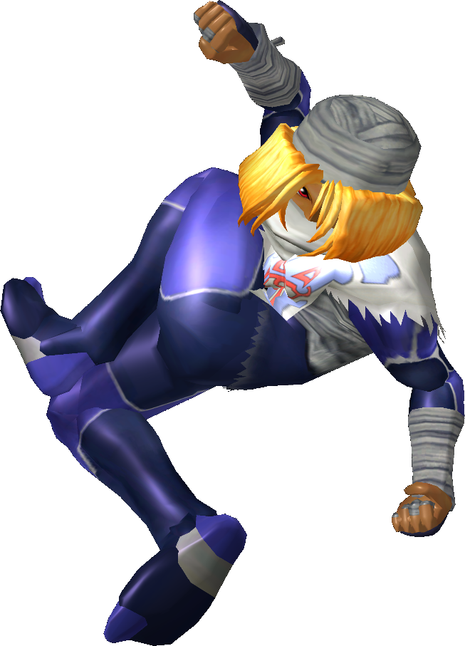

|  | Ranked 4th of tier list : SHEIK |
| Weight | |
|---|---|
| 12-14th heaviest | |
| Shield stats | |
| Grab range | 8th longest |
| Roll lenght | 5th longest |
| Shield size | 3-5th biggest |
| Wavedash lenght | 18-19th longest |
| Movement stats | |
| Walking speed | 6-10th fastest |
| Turning speed | 1-3rd fastest |
| Running speed | 3-5th fastest |
| Aerial stats | |
| Jump squat | 4 frames (1st fastest) |
| Short hop | 2nd highest |
| Aerial speed | 19th fastest |
| First jump height | 6th highest |
| Second jump height | 8th highest |
| Total jump height | 9th highest |
| Average fall speed | 6-7th fastest |
| Fast falling speed | 3/4th fastest |
| Falling speed | 7-9th fastest |
| Ledge stats | |
| 0-99% ledge roll | 17th longest |
| 100%+ ledge roll | 19th longest |
| 0-99% ledge attack range | 9th farthest |
| 100%+ ledge attack range | 22th farthest |
| Intangible ledgedash (Optimal/Perfect) | 8/12 frames |
| Notable players | |
| Shroomed, Plup, Mew2king, Android, Overtriforce, DruggedFox, Swedish Delight | |
| Smashboard forum | |
| http://smashboards.com/forums/sheik.128/ | |
Sheik used to be first on the Melee tier list until the eighth version of it, where Fox now currently takes the top spot. Sheik now ranks 4th on the tier list, ine the S tier primarilty due to her chain throw, excellent combos, a great finisher in the f-air, a very good approach due to fast aerials and high jumps, and one of the beste edgeguarding games in Melee. Sheik, however suffers from a relatively short and predictable recovery, as well as rather short but quick wavedash. Also, most of her moves are weak for an attack of their type.